Ggplots <–> interactive loon plots
Wayne Oldford and Zehao Xu
2020-03-22
ggplots2loon.RmdThe ggplot2 graphics package (part of the tidyverse package collection) uses the base grid graphics package to produce publication quality graphics for data analysis. Based on a grammar for graphics, ggplot2 also provides a lot of functionality (e.g. facets) that can be extremely useful in data analysis.
The loon graphics package provides interactive graphics especially valuable in any exploratory data analysis. This includes programmatic and direct manipulation of the visualizations to effect interactive identification, zooming, panning, and linking between any number of displays. Of course, loon also provides publication quality static graphics in grid via loon’s functions grid.loon() and loonGrob(). In particular, the standard R plot() function has been specialized to produce a grid version of any loon plot.
The loon.ggplot package brings both these packages together. Data analysts who value the ease with which ggplot2 can create meaningful graphics can now turn these ggplots into interactive loon plots for more dynamic interaction with their data. Conversely, data analysts who explore data interactively can at any time turn a snapshot of their interactive loon plots into ggplots. The former is accomplished by the simple translation function ggplot2loon() and the latter by the simple translation function loon2ggplot().
Ggplot -> Loon
Ggplots to interactive loon plots.
Basics
ggplot()
Consider the mtcars data set and suppose we draw a scatterplot of the mileage mpg (miles per US gallon) versus the weight of the car wt in thousands of pounds. In ggplot2 this would be constructed as
and displayed by printing the "ggplot" data structure p1 as
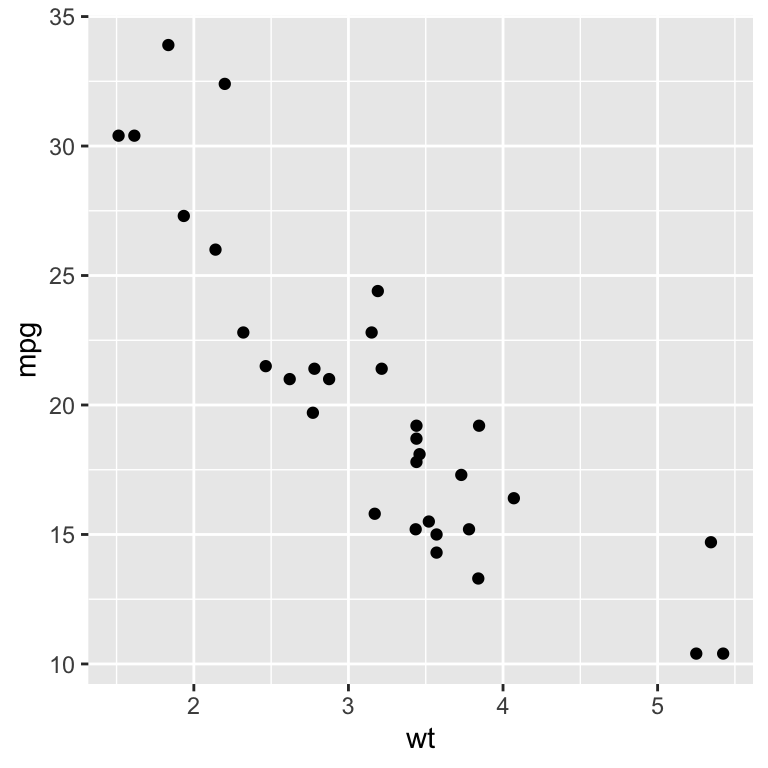
We might also display a histogram of some other variate, say the engine’s horsepower hp. In ggplot2 this would be constructed as
and displayed as
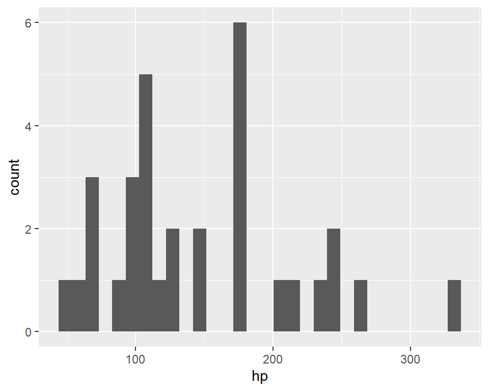
ggplot2loon() and grid.loon() or plot.loon()
Using the loon.ggplot package, the "ggplot" data structures p1 and h1 can be turned into interactive loon plots using the ggplot2loon() function:
library(loon.ggplot)
l_p1 <- ggplot2loon(p1) # the scatterplot
l_h1 <- ggplot2loon(h1) # the histogramThese loon plots should look very much (though not exactly) like the ggplot from which it was constructed. Using grid.loon() grid graphics versions of the loon plots can be created for static display, printing, and incorporation into documents:
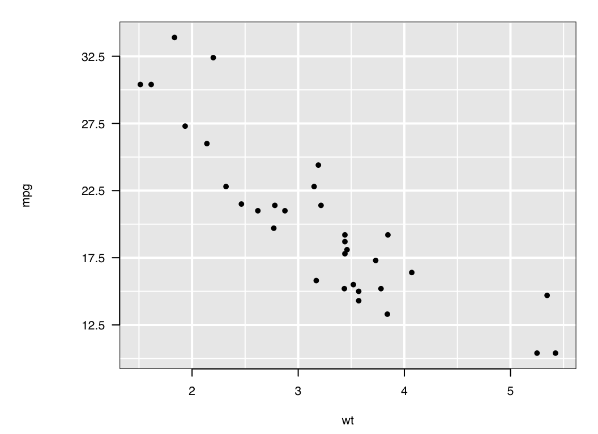
Alternatively, and more simply, we can use the usual plot function in R which has a method for loon objects (plot is essentially “syntactic sugar” since it simply calls grid.loon())
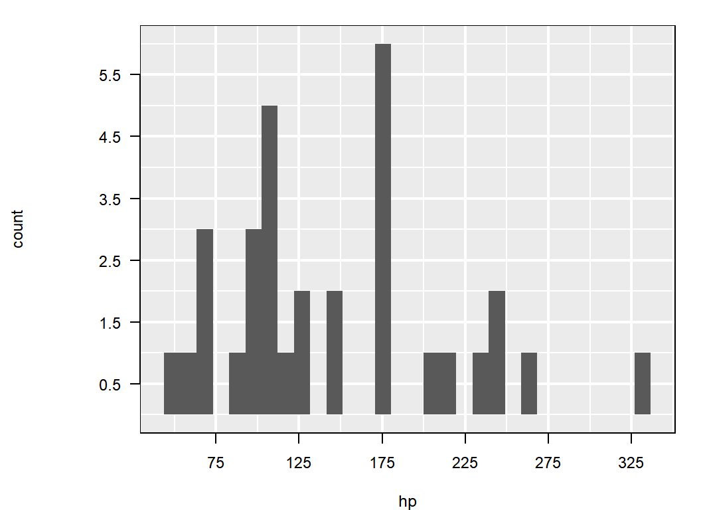
interaction - direct manipulation
Unlike p1 and h1, the loon counterparts l_p1 and l_h1 are both interactive; their displays can be changed by direct manipulation using the mouse and/or each loon plot’s loon inspector.
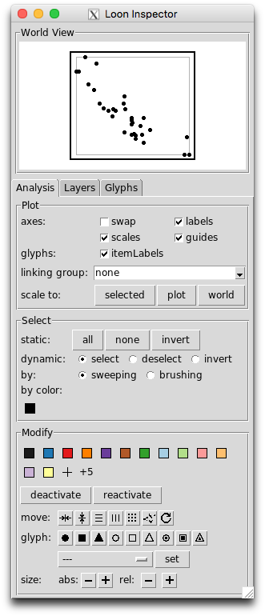
For example, points in the loon scatterplot l_p1, can be selected with a mouse (<SHIFT> select for multiple selection) and their glyph changed in shape or color, for example. Scrolling over the plot causes zooming and <RIGHT-BUTTON> (or <SECONDARY-BUTTON>, depending on your mouse setup) can be used to pan the plot (the same can be done via the “World View” of the inspector).
If, for example, the itemLabels box is checked in the inspector, then hovering over any point will pop a little “tool tip” identifying the point.
Similarly, the loon histogram l_h1 has many interactions and a specialized loon inspector. For example, the histogram can be changed from frequency to density in the inspector and the “bin handle” turned on and off; the latter can be directly manipulated to change the size and location of the bins whenever it appears on the histogram plot.
Many, many, more interactions are possible. You might want to experiment with the plot and the inspector to see some of the possibilities. (Recommended: explore the vignettes given in the loon package).
linking
One of the basic features of interactive statistical graphics is the ability to link displays. In loon this is most easily accomplished via the loon inspector.
To see the effect, with the mouse select one of the loon plots l_p1 or l_h1 and then select the inspector. On the inspector, type the text mtcars into the text input box which appears next to “linking group”; then hit return/enter. As a result, the text appearing there will be mtcars [1 linked]; this shows that the selected plot is participating in the linking group named “mtcars” and that it is presently the only one so linked.
Now select the other plot l_h1 or l_p1. On the loon inspector for this plot, you can again enter “mtcars” as this plot’s linking group (this can be done as before or selected from the menu accessible from the down arrow next to the linking group. As soon as the second plot is linked, the user is prompted to choose how to synchronize the linked features of the new plot to the previous plot. The choice is between pushing the display features from the current plot to the rest of the plots in the group and pulling the display features from the group to change those of the current plot. The resulting linking group entry should now show mtcars [2 linked].
Once the both plots are in the same linking group (i.e. “mtcars”), selections in one plot will be reflected in the other. Try this. To see colour changes in the histogram, the box stacked colors must be checked.
Linking is one way to condition on the values in one plot and observe their effect in the others. Try this with “brushing” in either plot.
interaction - programmatic
The loon plot, l_p1 is itself a data structure of class "l_plot" and "loon"
class(l_p1)
#> [1] "l_plot" "loon"
l_p1
#> [1] ".l0.ggplot.plot"
#> attr(,"class")
#> [1] "l_plot" "loon"whose value is a string which uniquely identifies it. As such, it can be interacted with programmatically as well as by direct manipulation using the mouse and/or the plot’s loon inspector.
For example, via direct manipulation, the plot might have zoomed or panned so that many of the points no longer appear in the plot. The plot can be returned to its original position and scaling (either through the loon inspector’s scale to: plot or) by calling the function l_scaleto_plot() programmatically on the loon data structure l_p1 as in
As a base loon structure, an l_plot has a variety of l_info_states available that can be accessed and/or set. The names of these states are had with names(l_info_states(l_p1)) or more simply with
names(l_p1)
#> [1] "glyph" "itemLabel" "showItemLabels" "linkingGroup"
#> [5] "linkingKey" "zoomX" "zoomY" "panX"
#> [9] "panY" "deltaX" "deltaY" "xlabel"
#> [13] "ylabel" "title" "showLabels" "showScales"
#> [17] "swapAxes" "showGuides" "background" "foreground"
#> [21] "guidesBackground" "guidelines" "minimumMargins" "labelMargins"
#> [25] "scalesMargins" "x" "y" "xTemp"
#> [29] "yTemp" "color" "selected" "active"
#> [33] "size" "tag" "useLoonInspector" "selectBy"
#> [37] "selectionLogic"Their values can be accessed using the [] function. For example, the background grid lines which appear by default on ggplots, are called “guides” in loon and the logical state determining whether they appear or not in the loon plot is "showGuides", accessed as
These can be turned off (loon default) or on (ggplot default) by simply changing this value – either through the guides check box in the inspector or programmatically as
# Turn the guides off
l_p1["showGuides"] <- FALSE
# Turn the guides on again
l_p1["showGuides"] <- TRUEAll other info states can also be changed programmatically as well. For example, a title could be added, the axis labels changed, and a highly informative "itemLabel" given for each car.
l_p1["title"] <- "1974 Motor Trend Car Road Tests"
l_p1["xlabel"] <- "Curb weight (1000s of lbs)"
l_p1["ylabel"] <- "Gas mileage (miles per US gallon)"
newlabels <- paste0(rownames(mtcars), "\n ",
c("V-", "straight-")[mtcars$vs + 1], mtcars$cyl, " \n ",
mtcars$disp, " cubic inch \n ",
mtcars$gear, " speed \n ",
c("automatic", "manual")[mtcars$am + 1]
)
l_p1["itemLabel"] <- newlabels
l_p1["showItemLabels"] <- TRUEThe last line above ensures its item label appears whenever the mouse hovers over any point. This gives some interesting information to the curious autophile.
The points might also be visibly distinguished by the transmission type and the number of cylinders of its engine. Glyph type could distinguish transmissions and colour the number of cylinders. (To better distinguish shapes, we also make the glyphs fairly large via the size state.)
l_p1["size"] <- 10
l_p1["glyph"][mtcars$am == 0] <- "ccircle"
l_p1["glyph"][mtcars$am == 1] <- "triangle"
gears <- sort(unique(mtcars$gear))
ngears <- length(gears)
cols <- c("lightblue", "steelblue", "black")
for (i in 1:ngears) {
l_p1["color"][mtcars$gear == gears[i]] <- cols[i]
}We might then zoom in on the "black" coloured points (note that these are now hex colors), and maybe remove the others from the display (temporarily render them inactive) as follows.
l_p1["active"] <- l_p1["color"] == l_hexcolor("black")
l_scaleto_active(l_p1)
l_p1["title"] <- "5 speed manual transmission"The plot should now look something like this (a grid graphics version of l_p1):
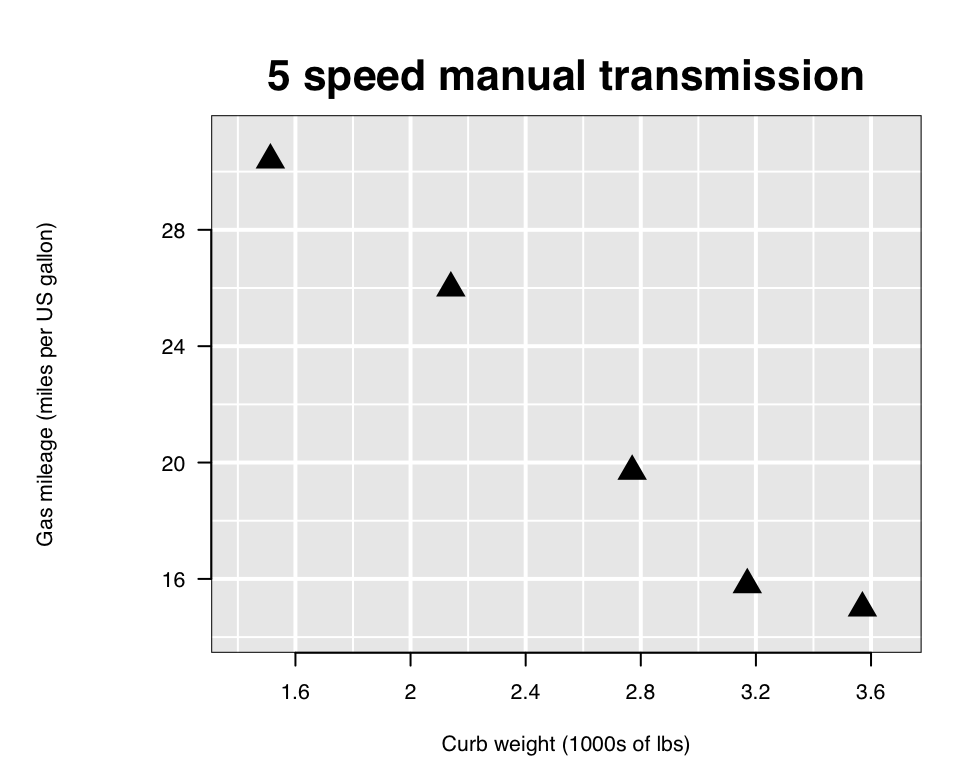
Again, the plot can be returned to its original scale with all points reactivated as follows:
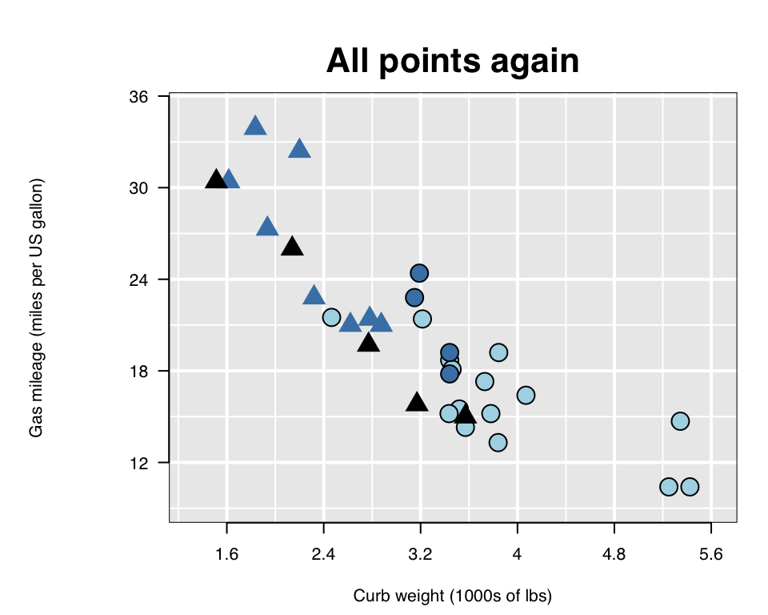
linking
In loon, plots are linked only if they are in the same linkingGroup (which can be any string that meaningfully identifies the group of plots). The linkingGroup can also be set programmatically. For the first plot in a linking group, this can be set using the square bracket notation as above. For example, instead of “mtcars” we might want a more meaningful string for the linking group for l_p1.
The two plots l_p1 and l_h1 are now no longer linked because they are no longer in the same linking group.
To add l_h1 to this new linking group called “Motor Trend 1974”, the square bracket assignment will no longer work. This is because the two plots must be synchronized at the time any plot is added to an existing group. Instead, l_h1 (and any subsequent plot) must be added to the group using the l_configure() function as follows:
Notice, by the way, that the (stacked) colours in the histogram will follow those of l_p1. For example,
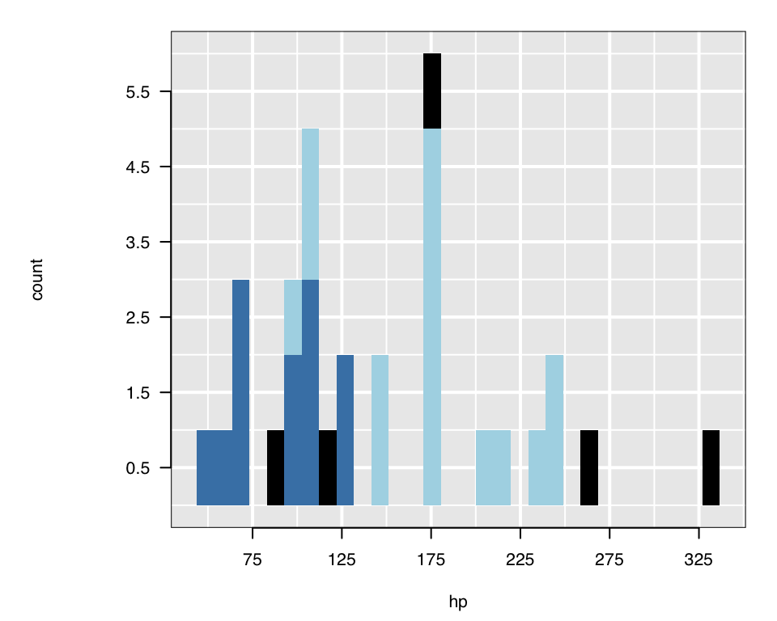
linking with ggplot2loon()
It is possible to declare the linking group of the loon plot at the time it is created from the ggplot.
For example, the relationship between the acceleration and the drive axle ratio could be of interest; these are measured by the time taken to accelerate to a quarter mile, qsec, and drat. The gplot is
which looks like
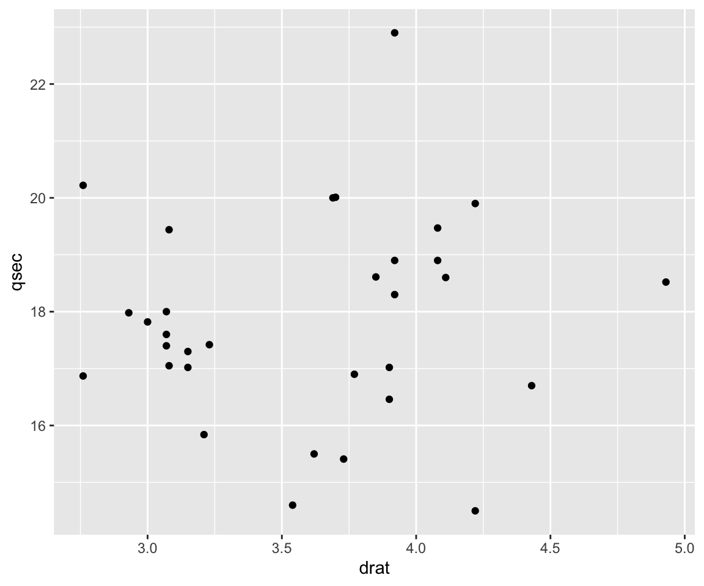
The corresponding loon plot can be linked immediately when it is created
l_p2 <- ggplot2loon(p2,
linkingGroup = "Motor Trend 1974",
title = "Acceleration measures",
xlabel = "Drive axle ratio",
ylabel = "Quarter mile (seconds)",
itemLabel = newlabels)as can any other state of a loon plot, such as title, xlabel, ylabel, oritemLabel` as shown here.
The points in the loon plot inherit their colours from the linking group “Motor Trend 1974”:
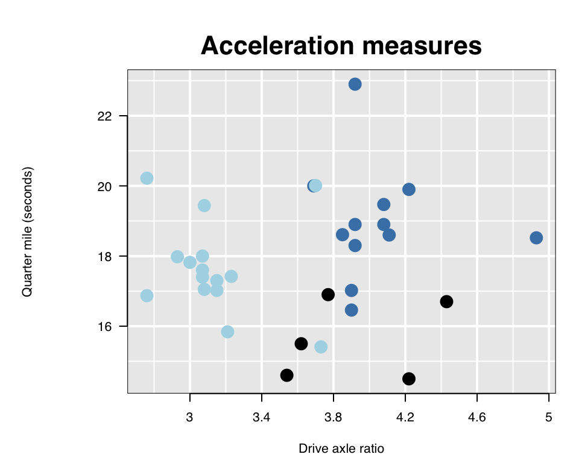
Note that l_p2 did not inherit the shapes of its points from the l_p1. That is because only those states that have been defined as linkedStates are shared by any given plot.
linked states
The linkedStates of any plot are those which that plot will share (and hence update) with any other plot in the same linkingGroup. The default states that are linked for an l_plot like l_p1 are
and a change in any of these states by any plot in the linking group will cause the same change in these states on l_p1. These are the same states linked by l_p2.
In contrast, the loon histogram l_h1 has default linked states
which excludes size as not a meaningful state for a loon histogram (class l_hist).
The linked states can be modified. For example, we might choose to not have the second plot respond to changes in the “active” state of other plots in the same linking group. This is effected by reducing the states for just the plot l_p2
A more sophisticated change would be also link the glyphs used for each point between plots. This will typically be the shape of the glyph. (Warning: but not always. For example, when images are used for the points, a little more care needs to be taken). To do this for both l_p1 and l_p2 we add to the states being linked as follows.
l_setLinkedStates(l_p1, c("glyph", "active", l_getLinkedStates(l_p1)))
l_setLinkedStates(l_p2, c("glyph", l_getLinkedStates(l_p2)))Now any change to the glyphs in either plot will change the glyphs in both.
Here now for l_p1
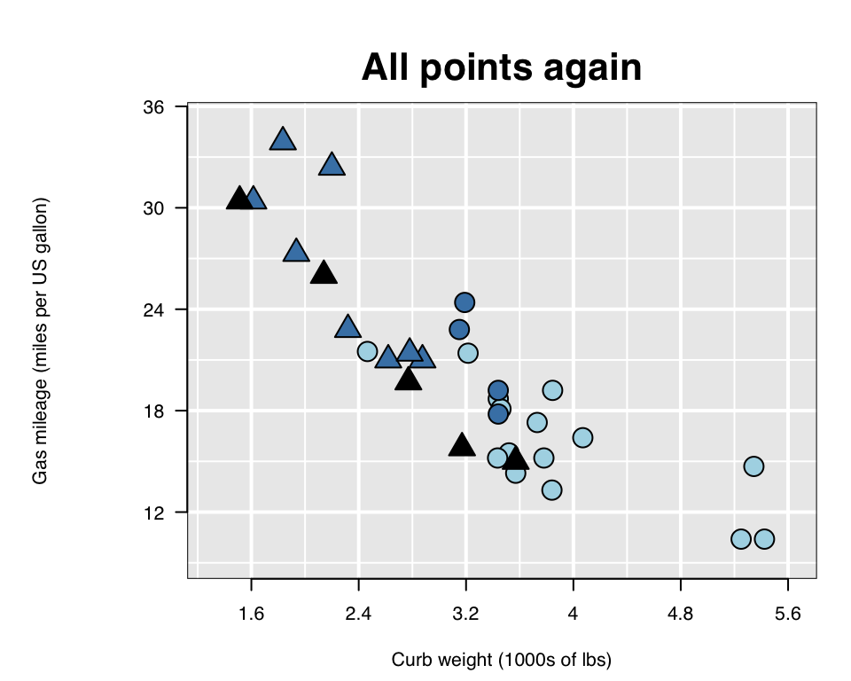 and propagated to l_p2
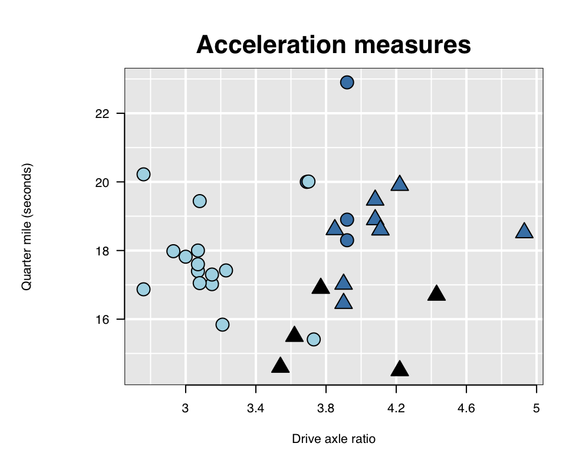
Layers
Rather complex plots can be built up in ggplot2 by adding layers. For example,
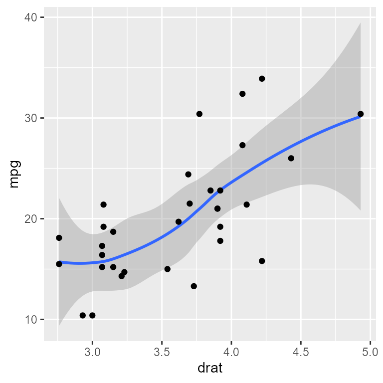
The corresponding interactive loon plot is
As with ggplots (and grid graphics plots), loon plots have layers. These can be identified (and manipulated) by selecting the “Layers” tab of the inspector.
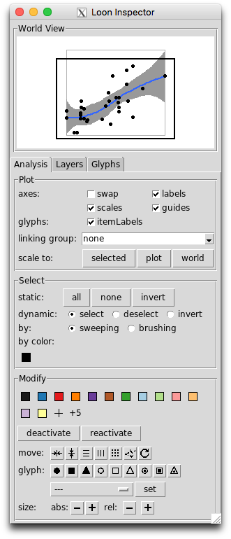
As can be seen, four distinct layers appear. There is the scatterplot (from geom_point()), then a group layer called the smooth which has been opened up here by toggling the triangle at its left to reveal it is composed of a line and a polygon layer (in that order).
The order of the layers is important and represent their visual order in the corresponding plot. By default, these will follow the order in which the various geoms appear in the construction of the ggplot. For example, had geom_point() appeared before the geom_smooth() in the left to right reading of the ggplot construction, then the Scatterplot layer would have appeared below the smooth group layer and visually obscured all points at the same location.
The order of display can be changed from the inspector via the first two buttons at the bottom left of the layers panel. The order can also be changed programmatically. For example, the scatterplot can be moved lower in the display order as
and raised back up again so that the points are again on top
Note that the scatterplot layer identified by its “layer id”, namely the string "model". The function l_layer_ids( l_p_fit ) will return a list of all the layer ids from its argument l_p_fit.
Reading left to right, the remaining buttons on the bottom of the layers tab on the inspector allow a (selected) layer to be moved out of a group, into a group, made visible, or made invisible, and add a new group layer, delete any layer, or scale the plot to the selected layer. All of these can also be achieved programmatically and numerous other functions exist in loon to add new layers – see help("l_layer") or l_help("learn_R_layer") for the range of possibilities.
the model layer
There is always one layer in loon that is the active layer which at present is always identified as the “model” layer. It is this layer which fields mouse events such as selection and brushing; it is also the layer that reacts to changes in linking states.
In loon, scatterplots and histograms can be identified as the “model” layer (the former produced via the l_plot() function, the latter via l_hist()).
A loon l_plot() corresponds to a ggplot geom_point() and a loon l_hist() to a ggplot geom_histogram().
In ggplot2 several geoms might appear in the construction of a plot, each one providing a layer. But in loon only one layer, namely the "model" layer, can be active. This means which of the ggplot layers are intended to be the active "model" layer in loon must be determined at the time of construction (the call to ggplot2loon()).
Consider the following example where three geoms are created as layers in the ggplot. Here a histogram (on a density scale) is overlaid with a scatter of points along the horizontal axis, and then with a curve from a density estimate.
p_hdp <- ggplot(mtcars, aes(x = wt, y = ..density..)) +
geom_histogram(binwidth = 0.5,
fill = "grey",
color = "red") +
geom_density(color = "firebrick", lwd = 1.5) +
geom_point(data = data.frame(x = mtcars$wt, y = 0),
mapping = aes(x, y),
color = "firebrick", size = 3)
# the ggplot
p_hdp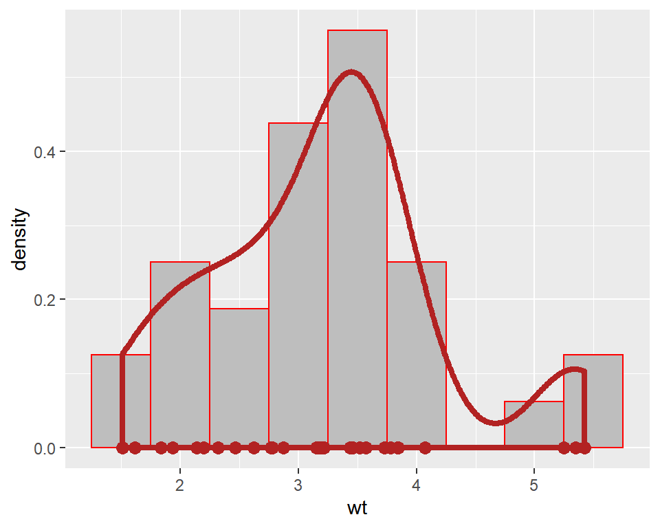
To render this in loon, which layer will be interactive needs to be determined. By default, this will be the first layer appearing in the construction of the ggplot – in this case the the histogram. The scatter of points will not be interactive and there are presently no interactive curves in a loon plot.
specifying the active geom layer
The default active layer is the first geom having a “model” layer counterpart in a loon plot. In this way, the order of construction of the ggplot implicitly determines the geom to be active in loon. Alternatively, the active layer can be explicitly specified when creating the loon plot via the activeGeomLayers argument.
# To have the the histogram active (the first geom in p_hdp)
l_p_Hdp <- ggplot2loon(p_hdp, activeGeomLayers = 1,
linkingGroup = "Motor Trend 1974")
# The following creates an error because the line for the density
# is not currently a possible model layer in loon
# ggplot2loon(p_hdp, activeGeomLayers = 2,
# linkingGroup = "Motor Trend 1974")
#
# To have the points be active (the third geom in p_hdp)
l_p_hdP <- ggplot2loon(p_hdp, activeGeomLayers = 3,
linkingGroup = "Motor Trend 1974")Note that the colouring will reflect the linking and indicate which layer is actually the active model layer. Check also the layers tab in each of these to see the distinction.
multiple active layers with geom_point()
When there are two or more geom_point() layers in the ggplot, it might sometime be of interest to have two or more of these merged into a single active layer.
For example, consider the following ggplot construction
pgps <- ggplot(mtcars, aes(x = wt, y = mpg)) +
geom_point(data = subset(mtcars, gear == 3), col = "firebrick") +
geom_point(data = subset(mtcars, gear == 4), col = "steelblue") +
geom_point(data = subset(mtcars, gear == 5), col = "black")
pgps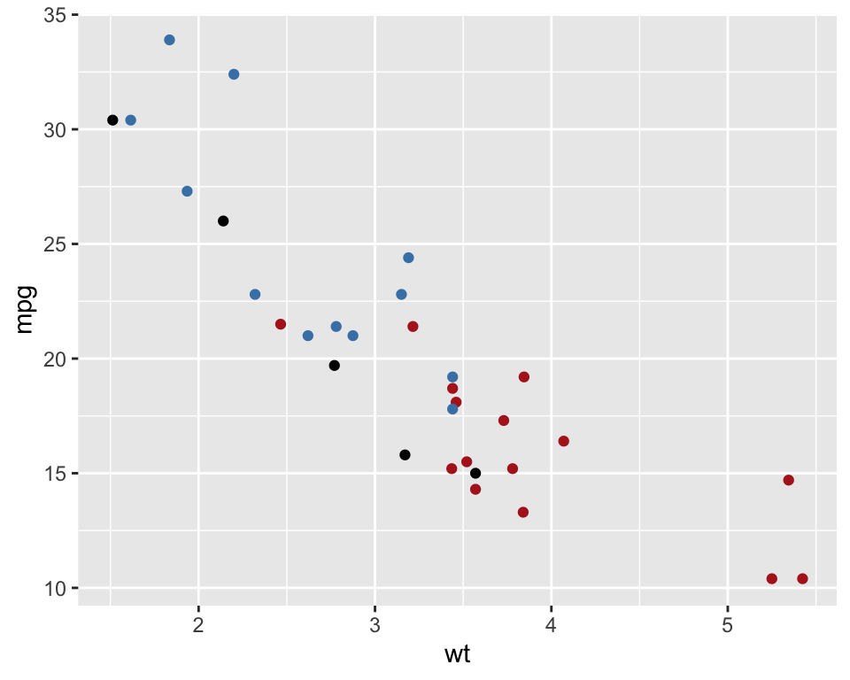
To create the interactive plot, any of the geom_point layers could contribute to the active scatterplot model layer.
l_pgps.1 <- ggplot2loon(pgps, linkingGroup = "Motor Trend 1974")
l_pgps.13 <- ggplot2loon(pgps, activeGeomLayers = c(1,3),
linkingGroup = "Motor Trend 1974")
l_pgps.123 <- ggplot2loon(pgps, activeGeomLayers = c(1, 2, 3),
linkingGroup = "Motor Trend 1974")These plots now have different subsets of the points as their scatterplot “model” or active layer.
WARNING The linking works as expected between these three plots but not with any of the other plots in the same linking group. With a little extra care/work, this too is possible.
Forcing the correct linking – linkingKey
One solution to getting the linking correct is to force the linkingKey of any new plot to match the keys already defined by the other plots in the linking group.
The linking key of a loon plot is simply a character vector (default here)
# this group's linking keys can be found from l_p1
groupKeys <- l_p1["linkingKey"]
groupKeys
#> [1] "0" "1" "2" "3" "4" "5" "6" "7" "8" "9" "10" "11" "12" "13" "14"
#> [16] "15" "16" "17" "18" "19" "20" "21" "22" "23" "24" "25" "26" "27" "28" "29"
#> [31] "30" "31"These values need to be selected and matched to the subsetting used by the geom_point() calls in the ggplot.
# the subsets were defined as
dataGeom1 <- mtcars$gear == 3
dataGeom2 <- mtcars$gear == 4
dataGeom3 <- mtcars$gear == 5As with linkingGroup, any change to linkingKey must also declare whether the existing linked states are to be pushed to, or pulled from, the group. Hence l_configure() must be used.
l_configure(l_pgps.1,
linkingKey = groupKeys[dataGeom1],
sync = "pull")
l_configure(l_pgps.13,
linkingKey = c(groupKeys[dataGeom1],
groupKeys[dataGeom3]),
sync = "pull")
l_configure(l_pgps.123,
linkingKey = c(groupKeys[dataGeom1],
groupKeys[dataGeom2],
groupKeys[dataGeom3]),
sync = "pull")Alternatively, the linking keys could be set up correctly when the loon plot was created
Facets and l_compound plots
A significant data analytic feature in the ggplot pipeline is the notion of faceting the plots, for example, via facet_wrap()
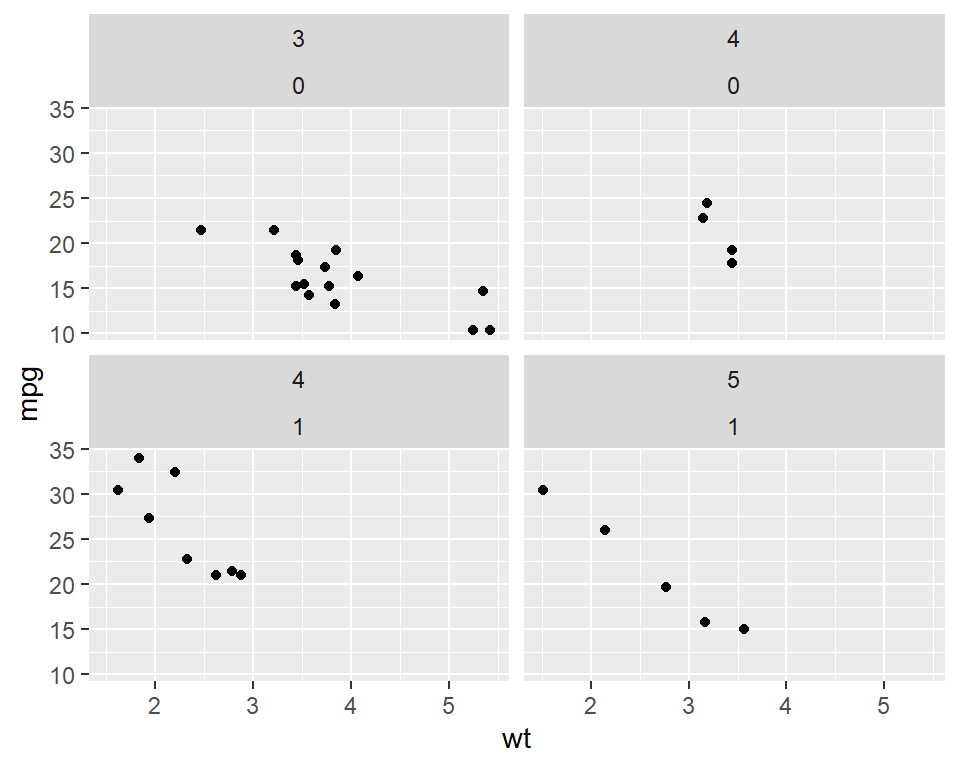 Faceted plots can also be rendered interactive in the same way as any other ggplot:
which will look like 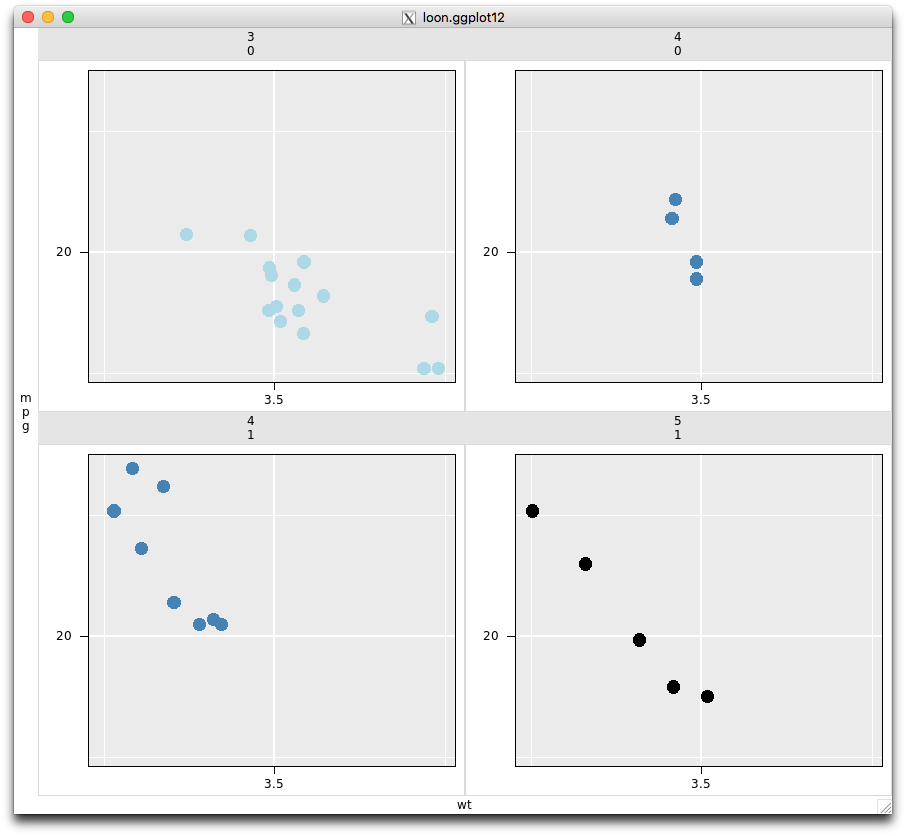 Note that because we set the linkingGroup at the time of creation (and because the linkingKey is the the default in all plots in this group), the interactive faceted plot has pulled the colours from the other plots in the same linkingGroup.
Note the class of l_fwrap:
is an l_ggplot because it is a loon rendition of a more complex ggplot,and it is an l_compound which indicates that it is a composition of individual loon plots.
As an l_compound plot, other features of the composition can be extracted. Such as the list of plots involved in the construction:
l_getPlots(l_fwrap)
#> $x1y1
#> [1] ".l10.ggplot.plot"
#> attr(,"class")
#> [1] "l_plot" "loon"
#>
#> $x1y2
#> [1] ".l10.ggplot.plot1"
#> attr(,"class")
#> [1] "l_plot" "loon"
#>
#> $x2y1
#> [1] ".l10.ggplot.plot2"
#> attr(,"class")
#> [1] "l_plot" "loon"
#>
#> $x2y2
#> [1] ".l10.ggplot.plot3"
#> attr(,"class")
#> [1] "l_plot" "loon"as well as their layout in the composition
expressed as a matrix of the location of the plots in the order in which they appear in getPlots().
Each plot in l_fwrap is an independent loon plot which can be interacted with either through the inspector or programmatically.
Pipes
The magrittr package provides several different types of pipes which can be a handy way to organize computation, especially when the computation involves processing data for input to another procedure, in this case ggplot():
library(tidyverse) # load this to also have dplyr functionality
p1_piped <- mtcars %>%
rename(transmission = am, weight = wt) %>%
mutate(lp100km = (100 * 3.785411784) / (1.609344 * mpg)) %>%
select(weight, lp100km) %>%
ggplot(aes(x = weight, y = lp100km)) +
geom_point() +
ylab("Litres per 100 kilometres") +
ggtitle("Gas usage")Here the “pipe” %>% takes the output of its left hand side and pushes it into the first argument of its right hand side. Arbitrary many pipes may be gathered together.
This connects nicely with ggplot2’s addition + operator (+ itself is sometimes a pipe, sometimes a layer in ggplot construction) to create the ggplot from the data and assign it to p1_piped.
Two things to note here are. First, the result of the data manipulation is assigned at the beginning using the <- assignment function which seems to run counter to the data flow indicated by the pipes. A more consistent flow would be to have instead written
mtcars %>%
rename(transmission = am, weight = wt) %>%
mutate(lp100km = (100 * 3.785411784) / (1.609344 * mpg)) %>%
select(weight, lp100km) %>%
ggplot(aes(x = weight, y = lp100km)) +
geom_point() +
ylab("Litres per 100 kilometres") +
ggtitle("Gas usage") -> # Note assignment occurs here
p1_pipedNow the assignment operator -> is used at the end, matching the data flow of the pipes.
Second, in either case the ggplot is not itself displayed (or rendered) until it is printed.
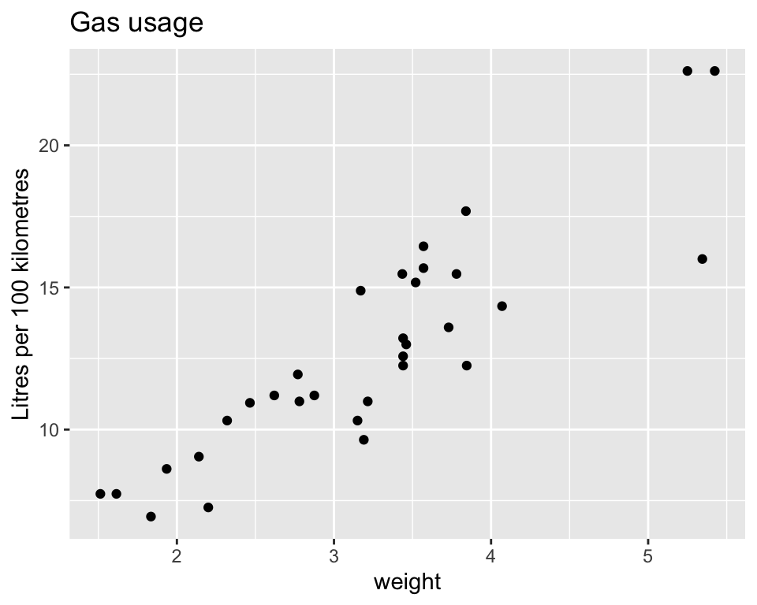
Once built, as happens when the plot has been displayed as above, an interactive loon plot can be had as always, simply by calling ggplot2loon() on the built ggplot:
ggplot2loon(p1_piped, linkingGroup = "Motor Trend 1974")
#> [1] ".l11.ggplot.plot"
#> attr(,"class")
#> [1] "l_plot" "loon"Again, the additional specification here of the linkingGroup will cause display attributes to be pulled from the plots in that linking group.
Using gg_pipe(data, ggplotObj)
Note that before a ggplot can be displayed, a number of steps are performed so as to prepare the plot object for rendering (e.g. see ggplot2::ggplot_build). Unfortunately, this delay in completing the preparation of the ggplot can make it difficult to attach further operations in the %>% pipeline after the ggplot itself – apart of course from further ggplot2 additions via the + operator. For example, one cannot simply add %>% ggplot2loon() at the end of the pipeline used to construct the ggplot. That is,
mtcars %>%
rename(transmission = am, weight = wt) %>%
mutate(lp100km = (100 * 3.785411784) / (1.609344 * mpg)) %>%
select(weight, lp100km) %>%
ggplot(aes(x = weight, y = lp100km)) +
geom_point() +
ylab("Litres per 100 kilometres") +
ggtitle("Gas usage") %>%
ggplot2loon()would produce neither a ggplot or an interactive loon plot.
To get around this problem, in loon.ggplot the function gg_pipe() is provided to encapsulate the ggplot construction in any pipeline and force the ggplot to be built (though not rendered in a display). The output of this function can then be passed on to ggplot2loon().
For example,
mtcars %>%
rename(transmission = am, weight = wt) %>%
mutate(lp100km = (100 * 3.785411784) / (1.609344 * mpg)) %>%
select(weight, lp100km) %>%
# encapsulate the ggplot construction with gg_pipe()
gg_pipe(ggplot(aes(x = weight, y = lp100km)) +
geom_point() +
ylab("Litres per 100 kilometres") +
ggtitle("Gas usage")
) %>%
# and pass the built plot on
ggplot2loon(linkingGroup = "Motor Trend 1974")
#> [1] ".l12.ggplot.plot"
#> attr(,"class")
#> [1] "l_plot" "loon"constructs the interactive plot which could have been assigned to a variable as was done with the original ggplot construction.
From here, the pipeline can be grown as before, recognizing of course that the output of ggplot2loon() is a loon plot of some sort. This means that functions that operate on loon plots (as their first argument can be used. As with any piping operation, attention must be given to the first argument of the functions in the pipeline as well as to what the input and outputs are of any function.
For example,
library(magrittr)
mtcars %>%
rename(transmission = am, weight = wt) %>%
mutate(lp100km = (100 * 3.785411784) / (1.609344 * mpg)) %>%
select(weight, lp100km) %>%
# encapsulate the ggplot construction with gg_pipe()
gg_pipe(ggplot(aes(x = weight, y = lp100km)) +
geom_point() +
ylab("Litres per 100 kilometres") +
ggtitle("Gas usage") ) %>%
# and pass the built plot on
ggplot2loon(linkingGroup = "Motor Trend 1974") %>% # pipe the loon plot on
l_cget('color') # Gets and returns the vector of point colours
#> [1] "#46468282B4B4" "#46468282B4B4" "#46468282B4B4" "#ADADD8D8E6E6"
#> [5] "#ADADD8D8E6E6" "#ADADD8D8E6E6" "#ADADD8D8E6E6" "#46468282B4B4"
#> [9] "#46468282B4B4" "#46468282B4B4" "#46468282B4B4" "#ADADD8D8E6E6"
#> [13] "#ADADD8D8E6E6" "#ADADD8D8E6E6" "#ADADD8D8E6E6" "#ADADD8D8E6E6"
#> [17] "#ADADD8D8E6E6" "#46468282B4B4" "#46468282B4B4" "#46468282B4B4"
#> [21] "#ADADD8D8E6E6" "#ADADD8D8E6E6" "#ADADD8D8E6E6" "#ADADD8D8E6E6"
#> [25] "#ADADD8D8E6E6" "#46468282B4B4" "#000000000000" "#000000000000"
#> [29] "#000000000000" "#000000000000" "#000000000000" "#46468282B4B4"In the magrittr package (the source of the pipeline operation) there are a variety of pipeline operators which might also be useful – not just %>%.
just use loon for built-in interactive plots
Of course, for plots already existing in loon, ggplot() and hence gg_pipe() could be avoided entirely:
mtcars %>%
rename(transmission = am, weight = wt) %>%
mutate(lp100km = (100 * 3.785411784) / (1.609344 * mpg)) %>%
select(weight, lp100km) %>%
# and pass the built plot on
l_plot(title = "Gas Usage",
showGuides = TRUE, showScales = TRUE,
ylabel = "Litres per 100 kilometres",
linkingGroup = "Motor Trend 1974") %>%
plot() # get a static version via grid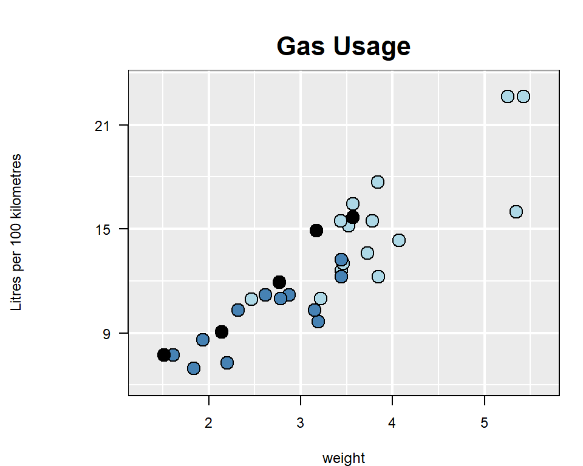
or
mtcars %>%
rename(transmission = am, weight = wt) %>%
mutate(lp100km = (100 * 3.785411784) / (1.609344 * mpg)) %>%
select(lp100km, weight, transmission) %>%
# and pass the built plot on
l_pairs(showHistograms = TRUE,
linkingGroup = "Motor Trend 1974") -> # and assign the result.
l_ppproduces an interactive pairs plot with histograms on the margins (see ?l_pairs) and assigns the result to l_pp (which could have been assigned at the beginning with <- as well).
Loon -> Ggplot
Loon plots to ggplot objects
Turn loon static via loon2ggplot()
Interactive loon plots can be static by calling loonGrob() or grid.loon() to turn loon widgets to grid objects. However, the modification of a grid object needs strong background knowledge of package grid. Besides, low level grid is commonly used as a foundation of other systems and it does not have a formal model. Thus, grid objects are hard to be extended to other systems.
Ggplot provides a unified data structure which is easy to be extended. Loon2ggplot() takes advantage of that, transforming loon widgets to ggplot objects.

Add a smooth line on lp100km vs weight scatterplot and density curve on weight histogram. Also, modify the theme of this compound plot.
# Modify theme
g <- g + theme_light()
# Add a smooth line on g[2,2]
# the index of `lp100km vs weight` scatterplot is
# 1 * 4 + 2
g$plots[[6]] <- g$plots[[6]] + geom_smooth()
# Add a density curve on g[1,2]
# the index of `weight` histogram is
# 1 * 4 + 1
g$plots[[5]] <- g$plots[[5]] + geom_density()
g
Comparing with static grid (via loonGrob()), modification of ggplot (via loon2ggplot) is simpler and more creative.
Note that:
Compound loon widget (the previous example) like l_ts and l_pairs are created by GGally::ggmatrix. Features like theme, labels can be piped through but by ggmatrix rule. The single ggplot object can be extracted by ...$plots[[id]], where id is the index of such object. To M[x, y], \(id = (y-1) \times nrow + x\), \(nrow\) is the number of rows.
Geom layers
- Adding glyphs on scatterplot
Loon.ggplot package also provides glyph point layer to create scatterplots with a variety glyphs, such as polygon glyph, serialaxes glyph, image glyph and etc. Following example illustrates the USA destinations (not including Alaska and Hawaii) of “nyc” flights in 2013. All destinations have a “airplane” polygon glyph and LA is highlighted by a magenta star.
library(nycflights13)
library(dplyr)
destinations <- nycflights13::airports %>%
dplyr::rename(dest = faa) %>%
dplyr::semi_join(nycflights13::flights, by = "dest") %>%
dplyr::filter(lon > -151,
lat < 55)
LA <- data.frame(
lon = -118.243683,
lat = 34.052235
)
map_data("state") %>%
ggplot(aes(long, lat, group = group)) +
geom_polygon(color="black", fill="lightblue") +
geom_polygonGlyph(data = destinations,
mapping = aes(x = lon, y = lat),
inherit.aes = FALSE,
polygon_x = x_airplane,
polygon_y = y_airplane,
size = 2,
alpha = 0.5,
fill = "firebrick") +
geom_polygonGlyph(data = LA,
mapping = aes(x = lon, y = lat),
inherit.aes = FALSE,
polygon_x = x_star,
polygon_y = y_star,
fill = "magenta")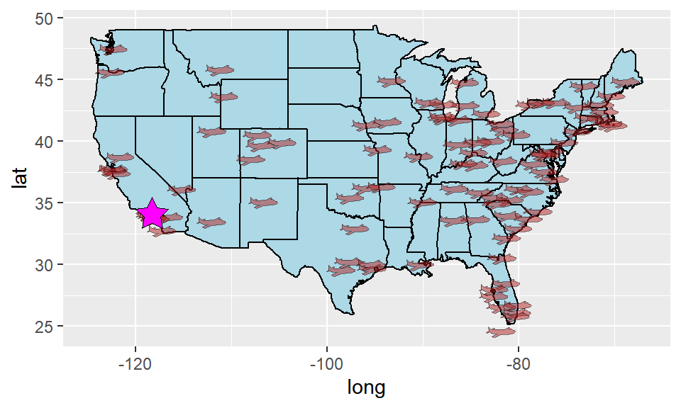
-
Providing serial axes plots (parallel coordinate or radial coordinate) via
ggSerialAxes()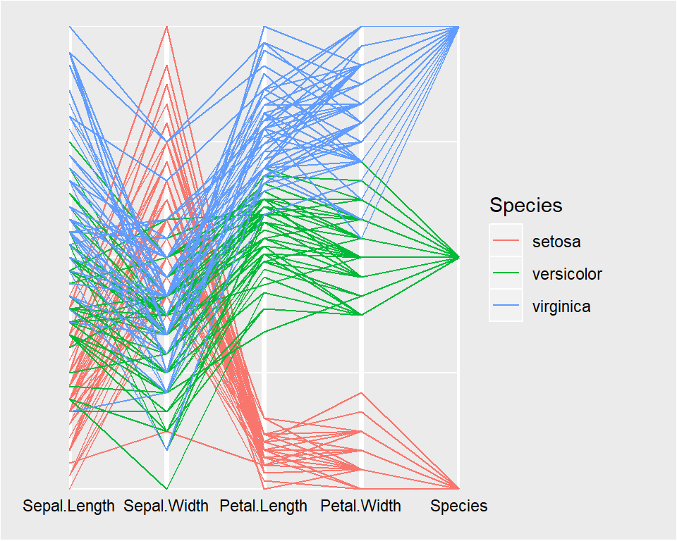
Function loon.ggplot()
loon.ggplot() function in loon.ggplot package is a S3 method and gathers features of both loon2ggplot() and ggplot2loon(). It can take either a loon widget or gg object and transform back and forth.
- Ggplot to loon
loon.ggplot(gg)is equivalent toggplot2loon(gg). - Loon to ggplot
loon.ggplot(loon)is equivalent toloon2ggplot(loon).